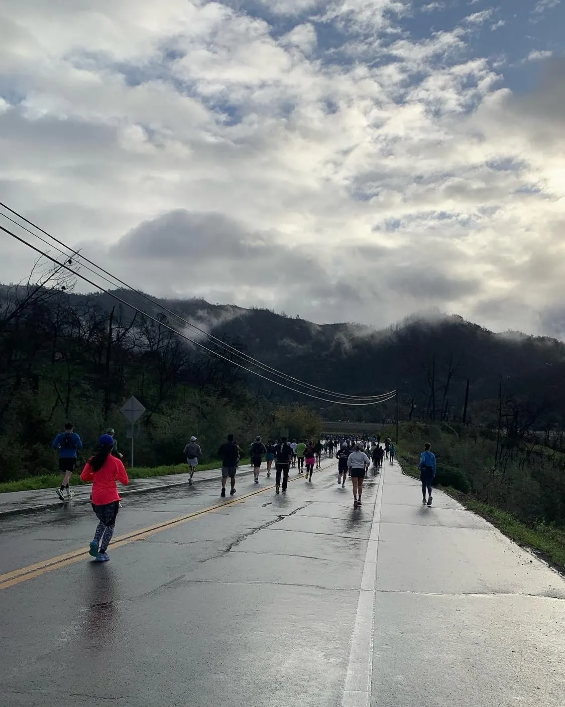

Affiliate links may be sprinkled throughout this post, and I may receive a small commission when you purchase from my links (at no extra cost to you!). I only recommend products that I believe in and would purchase myself. Thanks so much for supporting my blog 🙂
If you’re thinking about running your first marathon, or you’ve already committed to running one and are wondering how to get started, you’ve come to the right place! Running a marathon has been on my bucket list for a while, and I finally took the leap and did it! I truly believe that anyone who wants to run a marathon can do it, whether you’ve been running for years or just started getting into it. I had been running for awhile, but before I started training for a marathon, the most I had run was probably 6 miles, and even that distance was rare. So when I first started training, I discovered a whole new world of long distance running as I tried to figure out how to even train (what gear do you need? what and how much are you supposed to eat before, during, and after your runs??). Here I share my journey of training for the marathon, the gear and nutrition that worked best for me, and tips for any aspiring marathon runners out there – you can do it!
Almost a year ago, in May 2023, I decided to run a marathon.
I’ve always enjoyed running, but I wanted to truly enjoy the process. I wanted to embrace running and learn to love it, and feel good doing it. Running a marathon had been on my bucket list for a while, though admittedly, I didn’t think it was something I actually wanted to do. Back in college, I watched the Boston Marathon each year, feeling glad that I was on the sidelines cheering and not in the race, and thinking how silly it was for anyone to want to put themselves through something like that.
But a few years later, as I finished my second year of law school, I decided it was time to take the leap. I was at a point where a lot of things in my life seemed to be out of my control. A marathon, I figured, would help provide some stability in my life—where I knew that if I put in this much effort, I would get these results. It was something I could commit to and control (for the most part). I wanted to challenge myself to do something that would require training, that I knew I would have to commit to. So I downloaded a 6-month training plan off of the Internet and blocked out Saturday mornings for my long runs.
The Training Plan – learning more about myself
The 6-month plan looked manageable. While I didn’t follow the plan because I usually only ran 2-3 times a week, I made sure to always stick to my long runs. I found that long runs were a great way to start my weekends and explore L.A. I went trail running and found new trails. I found new running paths and was at the beach more often. Sometimes I brought my roommate and friends along—getting to enjoy the outdoors with others felt like killing two birds with one stone.
I discovered a whole new world of running. Going into it, I thought that the hardest part of training would be the cardio and the endurance. But the hardest part for me turned out to be nutrition and hydration. As I started running 6 miles and longer, I finally realized that I needed to eat something if I was going to survive the long runs. I started surfing the Internet and asking my running friends how they were managing to do this, learning about Gu gels and the wide array of goodies to bring with you, and the amount of water/electrolytes you should be drinking before, during, and after the run. I tried Gu gels but quickly abandoned them – they have a thick, pasty texture, and I just couldn’t get myself to eat them lol. But I loved Skratch Labs energy chews and highly recommend the raspberry ones (with real raspberries!) – they digest easily so I was able to snack on one and continue on running, and importantly, they taste good so you can look forward to eating them! They ended up being my main source of fuel during the marathon. I also brought Clif bloks energy chews with me on the run – my favorite flavor is black cherry. They are more solid so definitely sip some water after eating one, but they’re pretty chewy. They have caffeine and non-caffeine options. I also really like honey stinger waffles – they’re like cookies but more digestible and a perfect sugar boost when you need it! They have honey, caramel, vanilla, and other flavors, and the brand also has energy chews that I’ve heard good things about. And of course, plain old candy can do the trick too – running has been a great excuse to snack on a good amount of gummy bears and sour patch kids! If you’re looking for something more liquidy, I recommend Hume gels – they taste good and are less thick and pasty than Gu gels so they feel a bit easier to digest.
I found generally that taking an energy chew after each mile or so worked well for me (and served as a reward for another mile down!). At first, I thought it would be difficult to eat something while running at the same time (haven’t we been taught from a young age to rest after eating so that you can fully digest?), but my body gradually got used to consuming sugar and water while running at the same time. I learned to take sips instead of gulps, and to breathe in through my nose instead of my mouth when my stomach was beginning to cramp. Experiencing the consequences of both eating too much and not eating enough, I learned how much I could eat before a run and how long I needed to eat before. I made the mistake of eating a very salty dinner the night before and starting the long run already dehydrated, and vowed never to do that again. Or not fueling often enough the first hour/not eating a good breakfast, then suddenly getting super hungry at mile 16 and wolfing down a honey stinger waffle, which then made my stomach cramp for awhile. So through trial and error, I learned more about my body—what it can handle, and what it needs to perform at its best. I get dehydrated pretty easily, and found that getting a handheld water bottle and taking sips from it throughout the run (e.g. at the start of every mile) helped a lot. I used the Nathan handheld water bottle and found that it worked pretty well – it can be tiring to have to hold your phone or water bottle in your hand for a long period of time, so using a water bottle that you can wear over your hand relieves that extra stress for a long run! Some people carry their water in a vest or belt, which works well too – I just found it easier to incentivize myself to drink sips throughout the run when it was so accessible, basically right in front of me. The only downside was that it wouldn’t fit my phone, so if you want to put your phone in it too I would look into this water bottle with a phone case holder. I used and highly recommend the Flipbelt, which is a comfortable way to store your keys, phone, snacks, and other items that you don’t want to hold. It’s barely noticeable after a while and fits pretty snugly on your hips, and you can just machine wash it after your run. You can even get a water bottle that is designed to fit inside it – I probably would’ve used this if I didn’t have the Nathan water bottle already.
Training is as much a mental challenge as it is a physical one. Thinking about my upcoming long run during the week was almost worse than the run itself. And I worried that as the long runs gradually became longer and started to get more serious, I would get bored. Thankfully, I didn’t find this to be the case, and started running without headphones. I found that my ears would get tired after a while, and found it annoying to have to take my phone out every time I wanted to change a song. I probably should’ve made a running-specific playlist, or figured out how to use my Bluetooth headphones to more easily change a song. But I also enjoyed just savoring the present, attuned to my surroundings. I usually ran somewhere with beautiful scenery so I wouldn’t be bored, like by the beach or around a lake. I also joined a running club (shoutout to the Koreatown Running Club and Venice Run Club), which I highly recommend – you can make new friends and get tips from people who have run marathons before. They also often provide free running goodies and aid stations along the route which is super helpful, and the long runs usually go by faster too!
The couple weeks leading up to the marathon were probably the toughest mentally. I had managed to stick to my training plan, but in the last couple of weeks, when we were tapering, i.e. the long run was reduced to 10 miles from 20, I suddenly became tired of running – like I had lost all enjoyment of it. I just wanted the marathon to come and be done. The anticipation was the worst. And the weather forecast in Napa was cloudy and rainy – I had run in the rain once during one of my long runs, which had been cold and wet and not fun. The last thing I wanted on marathon day was to have the additional discomfort of getting soaking wet.
Marathon Day
Despite living in L.A. at the time, I decided to run the Napa Valley Marathon because running in beautiful wine country sounded like the perfect place to run in, with clean air and all (and a great excuse to celebrate afterward by driving back down the Pacific Coast Highway!). So on Friday afternoon I flew from L.A. to the Bay Area and met up with my friend Julia, who had flown all the way from the east coast to run the marathon with me! We visited my sister, who cooked us a nice pasta dinner. On Saturday we started off the day with a light 2-mile jog by the bay, drove to Napa to pick up our running bibs, and treated ourselves to another very filling pasta dinner (highly recommend Il Posto Trattoria) before retiring early for the night to try to get some sleep before the big day tomorrow!
On Sunday morning we were up at 4am. We ate the breakfast we had prepared – I had a boiled egg, sourdough bread with butter, and later a granola bar. In the chill dark of dawn we drove to downtown Napa and waited to take the shuttle to the start of the race, which began at 7:30am. And we were off!
I started off full of energy. The moment had finally arrived. Filled with anticipation after sitting on a bus for an hour, I was ready to start moving. It was a bright, beautiful morning. We could not have asked for better weather or a nicer marathon course: it was cool and cloudy, drizzled just a few times, and the sun poked through an hour or so into the marathon. And the course was GORGEOUS. It was so so beautiful with the surrounding scenery of vineyards (a couple of which had sheep!), and the air was clean and fresh, a pleasant contrast from L.A.

I knew I would need to pace myself for the marathon, and not start off too fast and then burn out later. But I was full of energy and didn’t want to stop myself. I started off at a 9 min/mile pace. I became concerned when my stomach began cramping not long after we started, but thankfully, after a few minutes of slowing down, it went away.
The course was mostly flat, save for a couple hills in the beginning. From mile 6 through mile 13 my pace started to plateau and slow down, with a slight boost around the half-marathon mark.
At mile 16 I saw my family on the sidelines! I was so happy that they had come all the way out to see me, and excited to see people that I knew. My sister was there with her camera, and my mom even ran with me for a bit. My dad was smiling as he took a video of me running by. That gave me a much needed energy boost for the next mile or so.
The next few miles were the toughest. At mile 17 I started to notice that my legs were aching. The finish felt so close – just 10 more miles! – yet so far. Walking felt really tempting, but I knew it was going to be more painful to start running again than to just keep running, so I tried to keep going. Miles 20–23 were my slowest. But even through the pain, I realized that I was enjoying the atmosphere and having fun. I knew I was going to finish, and that eventually I would get there. I had been pleasantly surprised to find that the marathon was much more fun than training. Was this the “Runner’s High” that people keep talking about? Or was I just feeling a sugar high because of all the energy chews and electrolyte drinks I had been consuming?
At mile 23 I had a sudden burst of adrenaline and started to pick up the pace. I became overwhelmed with gratitude and felt like I was about to cry, but had to force it down because I needed to breathe haha. I was just so grateful, thinking about all my family had done to support me in pursuit of this goal, from driving me to the beach to train (and running with me) to coming all the way out here to cheer me on. Random strangers were cheering me on when I really needed it. And I had the keen sense that everything had come to this. All the training, all the anticipation – it was so worth it. I had earned this moment, and I was going to enjoy every part of it. I could finally see the light at the end of the tunnel.
The last couple of miles felt extra long, and it started to drizzle, but I could feel the ending was near. Just a couple more minutes, I told myself, as I tried to pick up the pace some more.
I finished in just under 4 hours and 30 minutes (4:23:40 to be exact), with an average pace of 10:03 per mile. It’s not nearly a qualifying time for say the Boston Marathon, but it was more than I had expected for myself for a first marathon. Running a marathon reminded me there is light at the end of the tunnel, and that sometimes, trying your best is more than enough. I’m grateful for the opportunity to run in beautiful wine country, for my body and what is capable of, and for the joy of working at something for 6 months and seeing it come to fruition. I’m grateful for the running clubs which made training fun; for the strangers who cheered me on when I really needed it; for my family for being my biggest cheerleaders and for coming all the way out to support; and for my dearest friend Julia for going on this journey with me.
What’s Next?
I had planned a wine tasting for after the marathon, but was so dehydrated and tired that we ended up canceling it and going to bed early. We celebrated our achievement by spending two days driving down the beautiful Pacific Coast Highway (PCH) back to L.A. Our legs were in a lot of pain (it hurt to walk lol), so we were perfectly content to not move much, eat lots of seafood, and enjoy the beach views.
But a few days later, as the exhilaration from the marathon and my soreness faded away, the “post-marathon blues” settled in. This was not something I had anticipated at all, but know that it is real and something that you might experience. Inevitably I found myself asking the question, What’s next? I felt no desire to run (or even workout, for that matter). I felt down and tired (maybe from the lack of endorphins from not working out?). And I missed how good I felt about my body while I was training. I had lost a little weight over the course of 6 months of training, and now, just a week later, I felt like the progress I made had all but disappeared. And it’s not sustainable to keep running marathons for the rest of my life! But I’m sure I will find that balance — I’m excited to get back into other activities like tennis and hiking, and running a marathon has motivated me to continue to eat healthy and cultivate a mindset of desiring a healthy lifestyle. But for now, I’ll enjoy the moment and cherish the memories of this journey.
My Top 5 Tips For a Successful First Marathon
- You can do it! I truly believe that anyone who wants to run a marathon can do it. Of course it helps to like running, but everyone has a pace at which you feel like you can run all day, and running a marathon simply requires being able to sustain that pace and gradually increase it. (Not easy, but simple and doable!)
- Make a plan and stick to it. For me, Saturday mornings became my long run days. There were definitely mornings when I didn’t want to get out of bed or I just didn’t feel like running. But, rain or shine, feel like or not feel like it, on my period or not, I was out there running. And each time I was glad I did. Incorporating it into your routine helps – for me, that looked like blocking out Saturday mornings in my calendar, not planning anything crazy on Friday nights, and going to bed early (you will likely have to plan around your runs, and it’s worth it!). I recommend downloading the Nike Run Club app – you can follow a training plan to keep you on track, and for every run (guided or non-guided) it tracks your mileage, speed, and more! I especially like how it updates you every time you finish another mile, which is helpful when your phone is in your Flipbelt and you don’t want to have to take it out to find out how many miles you have left. Many runners and run clubs also use the Strava app to monitor their runs.
- Invest in the right gear. I was told by someone early on that good shoes will go a long way, and they were right. Go to a running store where they’ll measure your foot so that your shoe actually fits (they gave me a size that was a half size up what I would usually get, which apparently turns out to be better for running shoes). It’s so worth the investment! As someone who had shin splints in the past, I was worried that it would come back as I started to rack up on miles, and the Asics Gel Kayano shoes made the biggest difference – I found them to be very lightweight and comfortable, with a thick, cushioned sole that absorbs the shock of running. And because my feet have slightly different arches (so the running store person told me), I also got arch support inserts, which mold to the shape of your foot (make sure to get the soft arch supports, not the plastic cups). These two things helped ensure that I had problems with no shin splints or other injuries. And running socks are a must – I highly recommend the Balega brand – they are soft, cushioned, and so comfy! In terms of what to wear, try runs with different gear to see how it feels – I tried leggings vs. shorts, and different tees. Sometimes you may not realize until 16 miles in that actually the leggings don’t fit all that well, or that you prefer wearing shorts over leggings (or vice versa).
- Figure out what works best for you re: hydration/nutrition. Staying fueled and hydrated — eating and drinking the right amount — turned out to be the hardest part of training for me. And that’s why the long runs are so important – on each long run, I tried out something new, whether it was a new brand or a different mix of goodies, and learned more about my body and about myself. Everyone is different, and people can recommend things, but until you try it out yourself you won’t know if it works well for you. I also kept a running journal to make notes of what went well and not so well during each run.
- Know your “why.” Determine what your goal is, and work your training plan accordingly. For my first marathon, I simply wanted to finish and prove to myself that I could do it. So I enjoyed running without having a set time in mind. If I run another marathon, my goal might be to finish within a certain time, and that would probably affect how I train. And write down / know your “why” — it’ll come in handy when things start to get tough! I had several reasons for wanting to run a marathon, but in the tough moments, when I started questioning why I was putting my body through all this, what kept me going was simply that I had committed to something, and I was going to follow through on what I had started. Having crossed the finish line, I can now say that finishing the race was well worth it.